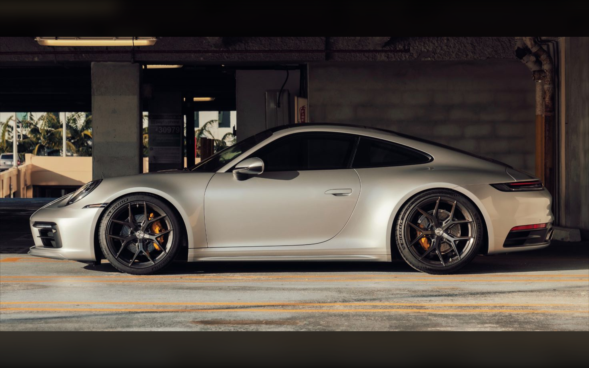

First Porsche sports car
Light construction and direct response define the early character.

Heritage
From early engineering discipline to the modern 911, the line is continuous: rear-engine clarity, compact volume, and usable speed.

Origins
The Porsche story begins with efficient packaging, low mass, and trust in the driver's hands. That discipline still informs every surface.
Historical timeline
Light construction and direct response define the early character.
A compact rear-engine coupe becomes the permanent reference.
Forced induction adds speed while preserving the 911 silhouette.
All-wheel drive, active aero, and everyday composure sharpen the flagship.
Archival-style images